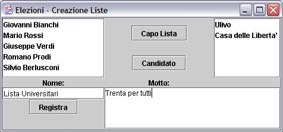

Elezioni
Sviluppare l’applicazione che consente di gestire le elezioni di un
collegio elettorale.
L'applicazione deve gestire le varie fasi delle elezioni, dalla
definizione delle liste alla pubblicazione dei risultati.
Tutte le classi devono essere nel package "elezioni".
R1 - Elettorato attivo
Il sistema agisce tramite la classe Elezione.
La prima fase delle elezioni consiste nella definizione dell'elettorato
attivo. Gli elettori attivi sono coloro che possono esprimere un voto.
Gli elettori sono rappresentati dall'interfaccia Cittadino che offre i metodi, getNome(), getCognome() e haVotato(); quest'ultimo metodo
restituisce un valore booleano ed in questa fase è falso.
Per aggiungere un elettore agli elenchi si usa il metodo aggiungiElettore() che riceve come
parametri nome e cognome dell'elettore e restituisce un oggetto che
implementa l'interfaccia Cittadino. Si assuma che non vengano mai
inseriti duplicati (omonimi).
L'elenco degli elettori registrati è disponibile tramite il
metodo getElettori() della
classe Elezione che restituisce una collezione. E' possibile accedere
ad un particolare elettore tramite il metodo getElettore() che riceve
come parametri nome e cognome e restituisce un Cittadino.
R2 - Liste
Le liste elettorali sono composte da un certo numero di cittadini. Un
cittadino è il candidato capolista e altri cittadini sono
candidati della lista.
Le liste sono rappresentate dalla classe Lista il cui costruttore riceve il
nome della lista ed il motto. Tali valori sono accessibili tramite i
metodi getNome() e getMotto().
Per assegnare il capolista si utilizza il metodo assegnaCapolista() che riceve come
parametro un oggetto Cittadino. L'interfaccia Cittadino, offre il metodo isCapolista() che restituisce true
se il candidato è capolista.
Per aggiungere candidati ad una lista si usa il metodo aggiungiCandidato() del tutto
simile al precedente. Il metodo isCandidato()
dell'interfaccia Cittadino
restituisce true se il cittadino è candidato o capolista.
Ogni cittadino può essere Candidato per una sola lista,
altrimenti i metodi assegnaCapolista() e aggiungiCandidato() lanciano
un eccezione di CandidatoNonValido.
E' possibile sapere chie è il capolista tramite il metodo getCapolista(), mentre i candidati
sono noti tramite il metodo getCandidati()
che restituisce una collezione di oggetti che implementano
l'interfaccia Cittadino.
Quando una lista è completa è possibile registrarla
tramite il metodo registraLista()
della classe Elezione. Si assuma che i nomi delle liste siano unici.
R3 - Votazione
Dopo la registrazione delle liste è possibile procedere con la
votazione vera e propria.
Ogni cittadino può esprimere un voto per una lista e per un
candidato tramite i metodi vota()
della classe Elezione. La prima versione di questo metodo permette di
votare per una lista e di esprimere una preferenza per un candidato
specificando il nome della lista e nome e cognome del candidato. La
seconda versione permette di assegnare solo il voto di lista, in questo
caso il voto di preferenza viene automaticamente assegnato al capolista.
Ogni cittadino può votare una sola volta altrimenti i metodi
vota() restituiscono un eccezione di TentatoDoppioVoto.
Se si cerca di esprimere un voto di preferenza per un candidato che non
appartiene alla lista votata ("taglio") viene segnalata un'eccezione di
TaglioNonPermesso.
R4 - Risultati
Dopo le votazione è possibile conoscere i risultati.
Il metodo getNumeroVotanti()
della classe Elezione restituisce il numero di cittadini votanti.
Il metodo getRisultatiListe()
restituisce la collezione delle liste, ordinata per numero di voti
decrescenti. Per sapere il numero di voti di una lista è
possibile utilizzare il metodo getNumeroVoti()
della classe Lista. E' possibile sapere la percentuale di voti tramite
il metodo getPercentualeVoti().
Il metodo getRisultatiCandidati()
restituisce la collezione dei candidati, ordinata per numero
decrescente di voti. Per sapere il numero di voti di un candicato si
usa il
metodo getNumeroVoti()
dell'interfaccia Cittadino.
R5 - GUI definizione liste
Scrivere la gestione degli eventi ed il caricamento dei dati per la
seguente interfaccia grafica che permette la definizione delle liste.
L'interfaccia è implementata dalla classe GuiCreaListe, il cui
costruttore riceve come parametro un oggetto Elezione da cui preleva le
informazioni sui cittadini e sulle liste.
La lista a sinistra contiene tutti i cittadini, quella a destra le
liste
(eventualmente) già registrate.
E' possibile registrare una lista inserendo nome e motto e premendo il
pulsante "Registra".
Selezionando un cittadino ed una lista è possibile definire il
capo lista oppure aggiungere un candidato alla lista usando i pulsanti
"Capo Lista" e "Candidato" rispettivamente.
Suggerimento: il metodo getSelectedValue() di JList permette di recuperare
l'oggetto inserito nella lista.
